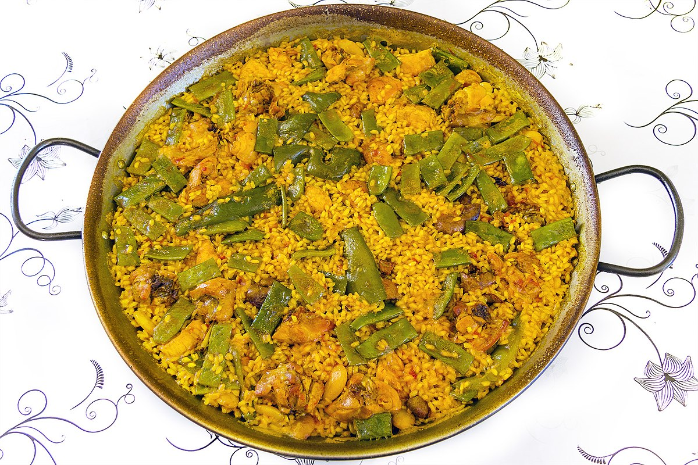

Valencian Paella
Return to main

Description
Valencia is a Spanish coastal city where this dish is particularly revered.
This paella features seafood, sausage and chicken but don't forget the saffron -- it is the essential spice of the dish.
Ingredients
- 1 tablespoon olive oil
- ¾ pound peeled and deveined large shrimp
- ¾ teaspoon salt, divided
- ¼ teaspoon freshly ground black pepper, divided
- ½ cup thinly sliced Spanish chorizo sausage (about 2 ounces)
- 2 (2-ounce) skinless, boneless chicken thighs, quartered
- 1 cup chopped onion
- 3 garlic cloves, minced
- ½ cup chopped tomato
- 1 tablespoon capers, drained
- ¼ teaspoon saffron threads, crushed
- 1 cup Arborio rice or other short-grain rice
- ⅔ cup white wine
- 1 (14-ounce) can fat-free, less-sodium chicken broth
- ½ cup frozen green peas
- ¼ cup water
- 18 mussels (about 3/4 pound), scrubbed and debearded
- 2½ tablespoons chopped bottled roasted red bell pepper
- 2 tablespoons chopped fresh cilantro
Steps
-
Heat oil in a large nonstick skillet over medium-high heat. Sprinkle shrimp with 1/4 teaspoon salt and 1/8 teaspoon black pepper. Add shrimp to pan; sauté 4 minutes or until shrimp are done. Place shrimp in a medium bowl. Add chorizo to pan, and cook for 1 minute or until browned. Add chorizo to bowl.
-
Sprinkle chicken with 1/4 teaspoon salt and remaining 1/8 teaspoon black pepper. Add chicken to pan, and cook for 2 minutes on each side or until browned. Add onion and garlic to pan; cook 2 minutes or until tender, stirring frequently. Stir in the tomato, capers, and saffron; cook 1 minute. Add remaining 1/4 teaspoon salt, rice, wine, and broth to pan; bring to a boil. Cover, reduce heat, and simmer 25 minutes or until rice is tender.
-
Add shrimp mixture, peas, 1/4 cup water, and mussels to pan. Cover and cook 8 minutes over medium heat or until mussels open; discard any unopened shells. Remove from heat, and stir in bell pepper and cilantro. Let stand 3 minutes.
Return to main